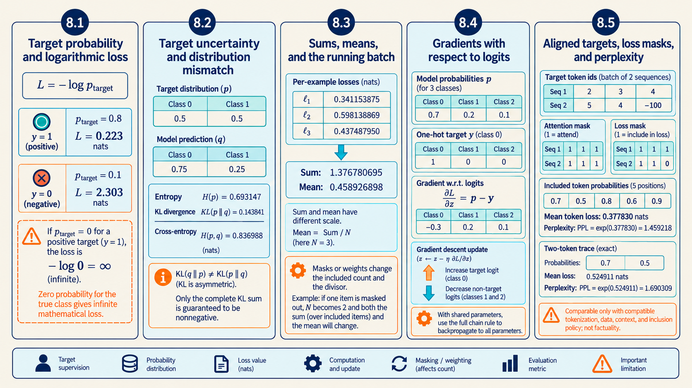
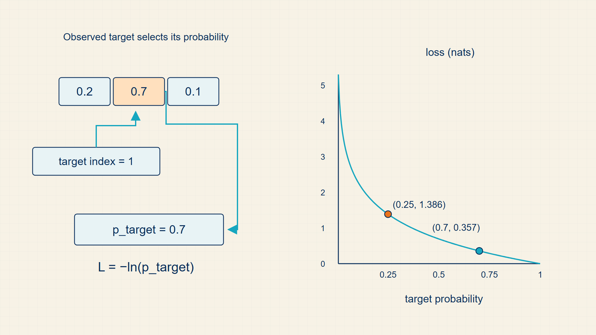
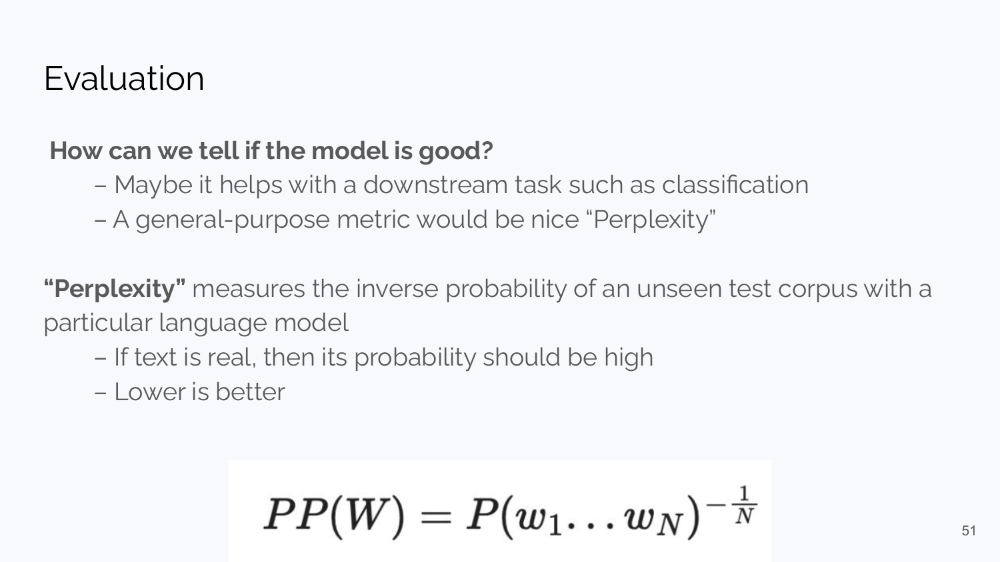

8 Cross-Entropy & Perplexity: Measuring Prediction Error and Uncertainty
Two classifiers can choose the same category while assigning different probabilities to the recorded answer. A correctness flag hides that difference. Logarithmic loss measures it. The penalty grows as the model assigns less probability to the observed target.

8.1 Target probability and logarithmic loss
For a positive example, probabilities 0.6 and 0.9 both produce a positive decision at threshold 0.5. Zero-one loss gives zero for either correct decision and one for any incorrect decision. It cannot distinguish the two probability estimates. Summing it counts errors, while averaging it gives the error fraction. Away from the decision boundary, a small score change leaves this loss constant, so its ordinary derivative is zero. At the boundary it jumps. Logarithmic loss supplies sensitivity to the assigned probability before the predicted class changes.
For four reference labels \([1,0,1,0]\), suppose four candidate rules predict \([0,1,0,1]\), \([1,1,0,1]\), \([1,0,0,1]\), and \([1,0,1,0]\). Their summed zero-one losses are 4, 3, 2, and 0, respectively, counting the mismatches in each row. A flexible rule can reach zero while adapting to details of those fitted records. Zero fitting errors alone do not establish performance on new examples.
The surprisal of an event with probability \(r>0\) is \(-\log r\). A more probable event has a smaller value. Using natural logarithms measures this quantity in nat units. One nat equals \(1/\log2\approx1.443\) bits. For the two positive predictions above, losses are \(-\log0.6\approx0.511\) and \(-\log0.9\approx0.105\).
Negative log likelihood, abbreviated NLL, applies this penalty to an observed answer under the model:
\[ \mathrm{NLL}=-\log P_\theta(y\mid x) \tag{8.1}\]
Here \(x\) is the input, \(y\) is its recorded target, and \(\theta\) is the parameter version that produced the probability. The event can be one class or a whole sequence, depending on the task. For a sequence, the conditional probability product becomes a sum of token losses.
Maximum-likelihood estimation (MLE) chooses parameters that assign the greatest probability to the recorded answers. For a fixed collection of conditionally independent examples, their joint likelihood is the product of their target probabilities. Taking a logarithm turns that product into a sum, and changing its sign turns maximization into minimization of total NLL. Dividing by the fixed number of examples gives the same optimum. This explains why the unsmoothed relative continuation counts in §3.4 fit their observed histories and why training can minimize log loss. An added regularization penalty or a changed set of included targets changes the optimization problem. For a sequence, the probability chain rule supplies the token factors. The tokens themselves need not be independent.
In binary classification, \(p\) is the predicted probability of label 1, and \(1-p\) is the probability of label 0. The target \(y\in\{0,1\}\) selects the corresponding term in binary cross-entropy, abbreviated BCE and also called binary log loss:
\[ L_{\mathrm{BCE}}=-y\log p-(1-y)\log(1-p) \tag{8.2}\]
If \(y=1\), the loss is \(-\log p\). If \(y=0\), it is \(-\log(1-p)\). For several possible classes, cross-entropy weights each class’s negative log probability by its target mass:
\[ L_{\mathrm{CE}}=-\sum_i y_i\log p_i \tag{8.3}\]
The index \(i\) runs over classes, \(p_i\) is the model probability, and \(y_i\) is the target probability for class \(i\). Both vectors are nonnegative and sum to one. A one-hot target puts all target mass on the recorded class. The sum then collapses to that class’s term:
\[ H(y,p)=-\sum_i y_i\log p_i=-\log p_y \tag{8.4}\]
In \(p_y\), the subscript means the recorded class index. In the sum, \(y_i\) means its indicator. The equality to \(-\log p_y\) applies to a one-hot target. With a distributed target, several terms can contribute.
A positive target mass assigned zero model probability gives infinite loss in the limiting mathematical expression. Zero target mass contributes zero, using the convention \(0\log0=0\). Direct floating-point evaluation of a logarithm at zero can still produce invalid arithmetic. Stable implementations work from logits without explicitly forming that problematic logarithm.
Example: Target probabilities and penalties
For a positive label, \(p=0.8\) gives \(-\log0.8\approx0.223\) nats. Changing it to 0.1 gives approximately 2.303 nats. The second prediction assigns much less probability to the event that occurred.
For a multiclass target whose probability is 0.7, the loss is \(-\log0.7\approx0.357\) nats. A separate target probability of 0.25 gives \(-\log0.25\approx1.386\) nats. That final value is both the NLL and the one-hot cross-entropy for the observed class.
Conclusion: The penalty depends on the probability of the recorded answer. It distinguishes probability estimates even when thresholding or argmax would leave the selected category unchanged.
In PyTorch, BCEWithLogitsLoss receives raw binary logits and same-shaped floating-point targets. CrossEntropyLoss and torch.nn.functional.cross_entropy receive raw class logits. Hard targets are integer class indices. Probability targets instead have the logits’ shape and must be valid distributions.1
Later, §11.6 uses this interface in a runnable random-batch update, once the calculation of gradients through the model is established.
An observed class supplies one target event. When the target itself is a distribution, expected log loss also reflects uncertainty already present in those outcomes.
8.2 Target uncertainty and distribution mismatch
Even a correct probability model cannot predict a fair coin’s next outcome with certainty. Its average log loss reflects the outcome distribution’s uncertainty. A mismatched prediction adds another contribution.
In this section, \(p\) denotes the target distribution and \(q\) the predicted distribution. This differs from §8.1, where \(p\) denoted a prediction. The target probabilities \(p_i\) weight all averages below. Entropy is the expected surprisal when outcomes and probabilities both come from \(p\):
\[ H(p)=-\sum_i p_i\log p_i \tag{8.5}\]
Each outcome \(i\) contributes its surprisal \(-\log p_i\) multiplied by its occurrence probability \(p_i\). On a fixed finite set, entropy is zero for a certain outcome and largest for a uniform distribution. It measures uncertainty in that distribution, not errors against individual labels.
Cross-entropy instead uses predicted probabilities in those logarithms: \(H(p,q)=-\sum_i p_i\log q_i\). Subtracting \(H(p)\) gives \(\sum_i p_i(\log p_i-\log q_i)\). Combining each logarithm difference yields Kullback-Leibler (KL) divergence:
\[ \operatorname{KL}(p\mathbin\Vert q)=\sum_i p_i\log\left(\frac{p_i}{q_i}\right) \tag{8.6}\]
Consequently, \(H(p,q)=H(p)+\operatorname{KL}(p\Vert q)\). KL is the extra expected log loss from predicting \(q\) when outcomes follow \(p\). It is nonnegative and zero when the distributions agree. Exchanging \(p\) and \(q\) changes both the weights and the ratios, so KL is asymmetric and is not an ordinary distance.
For a finite value, \(q_i\) must be positive wherever \(p_i\) is positive. If \(p_i=0\), its contribution is defined as zero. A model probability of zero on a possible target outcome makes the divergence and cross-entropy infinite.
The nonnegative total follows from \(-\log u\ge 1-u\) for \(u>0\). To verify it, first differentiate \(\exp(\log u)=u\) with the exponential derivative from §6.1. This gives \(u\,d(\log u)/du=1\), so the logarithm’s derivative is \(1/u\). Now let \(f(u)=u-1-\log u\), whose derivative is \(1-1/u\). Thus \(f\) decreases for \(0<u<1\) and increases for \(u>1\). Its minimum is \(f(1)=0\), so \(u-1-\log u\ge0\), which gives the required inequality.
Apply this to \(u=q_i/p_i\) wherever \(p_i>0\), then multiply by \(p_i\) and sum. The KL sum is at least \(1-\sum_{i:p_i>0}q_i\), which is nonnegative because \(q\) has total mass one. Equality requires matching probabilities, including no extra mass outside the support of \(p\). Thus individual terms may be negative while their total remains nonnegative.
Example: Uncertainty plus mismatch
Take target distribution \(p=(0.5,0.5)\) and prediction \(q=(0.75,0.25)\). The entropy is \(-0.5\log0.5-0.5\log0.5\approx0.693147\) nats, or approximately 0.693.
Cross-entropy weights the model penalties by the target frequencies. Its terms are \(-0.5\log0.75\approx0.143841\) and \(-0.5\log0.25\approx0.693147\). Their sum is approximately 0.836988 nats.
The KL terms are \(0.5\log(0.5/0.75)\approx-0.202733\) and \(0.5\log(0.5/0.25)\approx0.346574\). Their sum is approximately 0.143841 nats, or 0.144. A single term can be negative even though the complete divergence is nonnegative.
Conclusion: The expected loss splits into \(0.836988\approx0.693147+0.143841\). Matching the prediction to \(p\) removes the mismatch contribution while leaving the fair distribution’s uncertainty.
Training observes examples rather than an exact target distribution. The chosen batch reduction specifies how their individual penalties contribute to an update.
8.3 Sums, means, and the running batch
Two batches can contain the same types of error but different numbers of examples. Summing their losses makes batch size affect the objective’s scale. A mean divides by the contributing count, allowing a different comparison.
A mean combines the per-example losses and divides by the number of contributing examples, using §1.3’s empirical-risk calculation. Every loss in a forward batch uses the same parameter values. For supplied losses 0.2 and 0.5, the sum is 0.7 and the mean is 0.35.
These training examples combine their losses into one scalar objective. Its gradient specifies how that aggregate penalty changes with the parameters. Chapter 11 develops the reverse calculation and its extension to multiple outputs.
For \(n>0\) contributing examples, the mean gradient is the sum gradient divided by \(n\). With the plain gradient-descent update from §5.4 at the same learning rate, the parameter change from the summed loss is \(n\) times that from the mean loss. For \(n=1\) or a zero aggregate gradient, the two steps coincide. The adaptive update rules introduced later in §10.3 and §10.4 require a separate comparison. Masks and example weights introduce their own inclusion and divisor rules. A reported loss is incomplete without its reduction.
The binary per-example expression and the meanings of \(y\) and \(p\) remain those derived in §8.1. Reduction now combines those penalties across the batch.
Example: Mean loss for the running batch
Keep the inputs and parameters from §5.3: \(X=[[1,0],[0,1],[1,1]]\), \(w=[0.8,-0.3]\), \(b=0.1\), and targets \(y=[1,0,1]\). The logits are \([0.9,-0.2,0.6]\). The probabilities calculated in §6.2 are approximately \([0.710949503,0.450166003,0.645656306]\).
Rows 1 and 3 have positive targets, so their penalties use \(-\log p\). Row 2 has a negative target and uses \(-\log(1-p)\). Keeping precision through these calculations gives losses approximately \([0.341153875,0.598138869,0.437487950]\).
Their sum is approximately 1.376780695 and their mean is approximately 0.458926898. Chapter 1’s supplied rounded penalties \([0.341,0.598,0.437]\) instead have mean \(1.376/3\approx0.458667\). Both round to 0.459 at three decimals, but only the unrounded calculation accompanies this parameter version.
Conclusion: The target determines which class probability each row contributes. Averaging those three penalties gives the objective whose gradient is used in §11.6.
The opening figure’s separate supplied losses \((0.22,1.20,1.55)\) average to \(2.97/3=0.99\). They are rounded penalties, distinct from the three-row running batch above.
A recorded language-model token contributes the same categorical penalty:
\[ L=-\log P_\theta(x_t\mid x_{<t}) \tag{8.7}\]
The observed token is \(x_t\), its available prefix is \(x_{<t}\), and \(\theta\) identifies the fixed parameters used in this forward calculation. Probability 0.25 gives approximately 1.386 nats for this one position. Section 8.5 determines which positions belong in a sequence mean. First, the local derivative explains how one included penalty depends on its logits.
8.4 Gradients with respect to logits
A target probability tells us the loss, but a parameter update needs a sensitivity to the score that produced it. The derivative chain rule from §5.4 connects these quantities. In the binary case, the path is logit \(z\), probability \(p=\sigma(z)\), then loss \(L\).
The needed logarithm rule follows from its inverse relationship with the exponential. For \(u>0\), \(e^{\log u}=u\). Differentiating with the exponential rule from §6.1 gives \(u\,d(\log u)/du=1\). Thus \(d(\log u)/du=1/u\).
For fixed binary target \(y\), differentiating the two BCE terms gives \(dL/dp=-y/p+(1-y)/(1-p)\). The second term is positive because differentiating \(1-p\) introduces another minus sign. Multiplication by sigmoid’s derivative \(dp/dz=p(1-p)\) gives \(-y(1-p)+(1-y)p\). Expanding and cancelling the two \(yp\) terms leaves
\[ \frac{dL}{dz}=p-y \tag{8.8}\]
Here \(p\) is the predicted positive-class probability, \(y\in\{0,1\}\), and \(z\) is the scalar logit. For \(p=0.8\), the derivative is \(-0.2\) when \(y=1\) and \(0.8\) when \(y=0\). A small direct descent step on \(z\) raises the positive example’s score and lowers the negative example’s score.
For multiple classes, hold a target distribution \(y\) fixed with \(\sum_i y_i=1\). Let \(S=\sum_i e^{z_i}\). Since \(\log p_i=z_i-\log S\), cross-entropy becomes \(L=\log S-\sum_i y_i z_i\). Changing coordinate \(z_j\) changes \(S\) at rate \(e^{z_j}\). The derivative chain rule therefore gives \(\partial L/\partial z_j=e^{z_j}/S-y_j=p_j-y_j\).
Example: A direct logit step
Take probabilities \((0.7,0.2,0.1)\) and target class 0, so \(y=(1,0,0)\). The logit gradient is \((-0.3,0.2,0.1)\). One compatible logit vector is \(z=(\log0.7,\log0.2,\log0.1)\).
A direct step at rate 0.1 adds \((0.03,-0.02,-0.01)\) to that vector. Recomputing softmax gives target probability approximately 0.709705. Its loss falls from approximately 0.356675 to 0.342905 nats.
Conclusion: Subtracting the local gradient raises the target logit relative to its competitors in this direct-score example. Actual model training updates shared parameters, whose effects on scores must also be differentiated.
A confident wrong prediction can have a large loss while its logit gradient remains bounded. The following diagram shows the score-to-probability-to-loss path. The calculation also needs the recorded target, which the diagram does not show.

For \(y=1\) and \(p=0.01\), the loss is \(-\log(0.01)\approx4.605170\), but the logit derivative is \(p-y=-0.99\). A supplied input coordinate of 2 multiplies that sensitivity to give a weight derivative of \(-1.98\). If the target were 0, the same probability would instead give logit derivative \(0.01\). The target is necessary to interpret either penalty or gradient.
The per-example BCE logit derivative has magnitude at most one, even as the penalty for a confident wrong prediction grows. Parameter gradients can be larger because input values and intermediate derivatives also contribute.
For a batch mean, each included example’s local logit derivative gains the divisor \(1/n\). Parameter gradients then combine these sensitivities with derivatives of the scores with respect to the parameters. Section 11.6 performs that complete calculation. The local descent argument does not guarantee that an arbitrary finite parameter step reduces the objective.
8.5 Aligned targets, loss masks, and perplexity
A padded sequence contains stored positions that are not observed next-token answers. Including them in loss would train or evaluate a different task. A loss mask identifies which target comparisons contribute. It is separate from the attention mask in §2.2, which controls which inputs a prediction may use.
Let \(N_{\mathrm{tgt}}\) count the included targets across the chosen sequence or batch. Each token loss is the negative log probability of one recorded next token. In a batch, the index \(t\) ranges over row-position pairs, and each prefix stays within its own sequence. Their unweighted mean is
\[ \mathrm{CE}=-\frac{1}{N_{\mathrm{tgt}}}\sum_{t\in\mathcal S_{\mathrm{tgt}}}\log P_\theta(x_t\mid x_{<t}) \tag{8.9}\]
The sum includes only selected target positions, and \(N_{\mathrm{tgt}}\) must be positive. An empty included set has no defined mean. A training program must reject or skip that batch before division, rather than report a zero loss as successful prediction.
For one recorded sequence of \(T>1\) tokens, all \(T-1\) following-token targets may be included. That special case is
\[ L_{\mathrm{LM}}(\theta)=-\frac{1}{T-1}\sum_{t=1}^{T-1}\log P_\theta(x_{t+1}\mid x_{\le t}) \tag{8.10}\]
Here logits based on \(x_{\le t}\) predict \(x_{t+1}\). When padding or another objective removes targets, the denominator becomes their actual included count, not automatically \(T-1\).
Example: The padded batch from §2.2
The input IDs from §2.2 are [[1,2,3,4],[1,5,4,0]], with validity mask [[1,1,1,1],[1,1,1,0]]. The six-entry vocabulary assigns BOS to 1, EOS to 4, and PAD to 0. Copying the IDs and ignoring padding gives labels [[1,2,3,4],[1,5,4,-100]].
Manual slicing pairs logits at positions 0 through 2 with labels at positions 1 through 3 before the loss call. The compared target rows are therefore [2,3,4] and [5,4,-100]. Five positions contribute. Both real EOS targets remain included, while the added PAD target is excluded.
Suppose those five target probabilities, in row order, are \((0.7,0.5,0.8,0.6,0.9)\). The negative log probabilities sum to approximately 1.889152 and give mean 0.377830. Dividing by six would incorrectly count the ignored comparison.
Conclusion: Seven retained input positions yield five next-token targets after alignment. Input validity and target inclusion count different objects. Ignoring a target removes its loss and its direct logit-gradient contribution.
The following runnable PyTorch check constructs supplied probabilities with those target values. Taking their logarithms creates compatible logits. It does not run a language model. The class axis has width 6, so flattening produces [B*(T-1),6] logits and matching integer targets.
Code example: Equivalent next-token alignments with five included targets
import torch
import torch.nn.functional as F
input_ids = torch.tensor([[1, 2, 3, 4], [1, 5, 4, 0]])
valid = torch.tensor([[1, 1, 1, 1], [1, 1, 1, 0]])
labels = input_ids.clone()
labels[valid == 0] = -100
# Supplied probabilities isolate the loss calculation from a model.
probabilities = torch.full((2, 4, 6), 1.0 / 6)
for row, pos, target, p in [
(0, 0, 2, 0.7), (0, 1, 3, 0.5), (0, 2, 4, 0.8),
(1, 0, 5, 0.6), (1, 1, 4, 0.9),
]:
probabilities[row, pos] = (1 - p) / 5
probabilities[row, pos, target] = p
logits = probabilities.log()
def included_mean(scores, targets):
count = (targets != -100).sum().item()
if count == 0:
raise ValueError("No included next-token targets")
return F.cross_entropy(scores, targets, ignore_index=-100)
shifted_targets = labels[:, 1:].reshape(-1)
loss = included_mean(logits[:, :-1].reshape(-1, 6), shifted_targets)
internal_targets = F.pad(labels, (0, 1), value=-100)[:, 1:]
equivalent = included_mean(logits.reshape(-1, 6), internal_targets.reshape(-1))
assert (shifted_targets != -100).sum().item() == 5
assert torch.allclose(loss, equivalent)
expected = -torch.tensor([0.7, 0.5, 0.8, 0.6, 0.9]).log().mean()
assert torch.allclose(loss, expected)
print(loss.item())ignore_index=-100 applies to integer class targets and removes the ignored position from this unweighted mean. It is not a vocabulary entry. The assertions check the five included targets and compare direct alignment with the equivalent right-padded label alignment. All-ignore labels trigger the explicit error branch. This construction assumes right padding. With left padding, the first real token can follow a padded input position, so target validity alone is insufficient. Include a next-token loss only when both its predicting position and its target are valid under the chosen objective. A real BOS input can provide the first valid prediction position.
GPT-2’s model-level loss in transformers 5.10.2 accepts copied, unshifted labels. Its loss helper pads the labels on the right with the ignore value, then takes labels from position 1 onward. This pairs each logit with the following token and ignores the final logit. The manual slice above excludes that final logit instead. Both constructions compare the same targets. Supplying already-shifted labels to an interface that shifts internally would shift twice.2
A response-only training objective can also ignore prompt targets while leaving the prompt visible as context. Suppose the first row’s prompt consists of BOS and token 2. Ignoring target 2 then leaves four included targets across the batch. An objective that learns every recorded continuation would retain that prompt target. Prompt masking is therefore an objective choice, not a universal language-model rule.
The smoothed count example in §3.4 provides another loss check. For an evaluation target bird after the, its probability \(1/6\) gives \(-\log(1/6)=\log6\approx1.792\) nats. The unsmoothed zero probability would give infinite loss. Smoothing makes this comparison finite without supplying evidence that the continuation occurred in the training corpus.
Perplexity expresses the mean natural-log token loss on an exponential scale:
\[ \mathrm{PPL}=\exp(\mathrm{CE}) \tag{8.11}\]
Write the included target probabilities as \(r_1,\ldots,r_{N_{\mathrm{tgt}}}\). Then \(\exp(-N_{\mathrm{tgt}}^{-1}\sum_i\log r_i)=(\prod_i r_i)^{-1/N_{\mathrm{tgt}}}\). The geometric mean target probability is \((\prod_i r_i)^{1/N_{\mathrm{tgt}}}\), so perplexity is its reciprocal. This is not generally the reciprocal arithmetic mean probability.
For correct-token probabilities 0.7 and 0.5, mean loss is approximately 0.524911. Rounded to three decimals, this is 0.525. Their geometric mean is \(\sqrt{0.35}\approx0.591608\), giving perplexity approximately 1.690309. The arithmetic mean is 0.6 and would give a different reciprocal.
The probability diagram expresses the same length normalization, using \(N\) for the included-token count.

For the two target probabilities 0.7 and 0.5, its inverse-probability expression gives \(0.35^{-1/2}\approx1.690309\). The exponent accounts for both included tokens.
A separate mean loss of 1.2 gives perplexity \(\exp(1.2)\approx3.32\). Mean loss 2 gives \(\exp(2)\approx7.389\), or about 7.4. A uniform distribution over \(V\) choices has perplexity \(V\), which motivates an effective-choice-count interpretation. A nonuniform model need not have that literal number of available tokens.
These results establish how perplexity summarizes assigned target probabilities. Comparisons need compatible tokenization, data, context, and inclusion policies. With base-2 logarithms, exponentiation uses base 2 instead. Neither low perplexity nor high likelihood establishes factual correctness. Held-out evaluation in Chapter 9 measures prediction performance on separate inputs.
Chapter checkpoint
Why can two correct classifications have different log losses? Which divisor applies to shifted targets [2,3,4] and [5,4,-100]? What happens if every target is ignored?
Answer: Log loss uses the probability assigned to the recorded answer, which a correctness flag discards. Five targets contribute to this unweighted mean. An all-ignored batch has no defined mean, so the program must reject or skip it before averaging.
For a positive label with \(p=0.8\), what is the logit derivative? Does a lower training perplexity prove that generated answers are true?
Answer: The derivative is \(0.8-1=-0.2\), before any batch-mean divisor. Lower training perplexity establishes a larger geometric mean probability for those fitted targets. It supplies no independent factuality test.
PyTorch contributors. (2026). CrossEntropyLoss. PyTorch 2.12 documentation. The ignored-label mean described here is the unweighted class-index case. Probability targets use a different input contract.↩︎
Hugging Face. (2026). Transformers 5.10.2: Causal language-model loss and GPT-2 forward. This account uses the default unweighted mean without a supplied batch-item divisor.↩︎